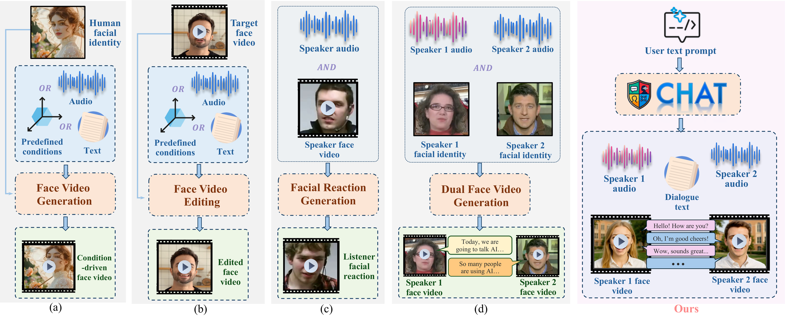
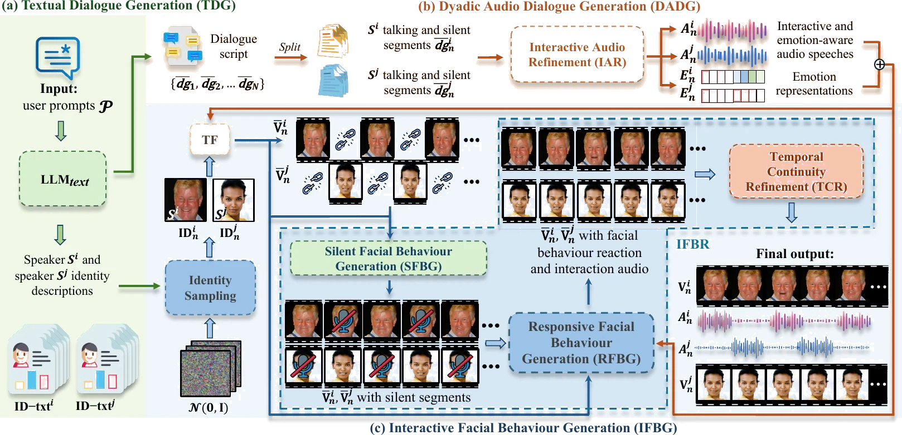
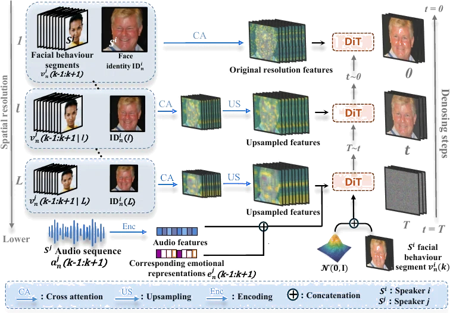
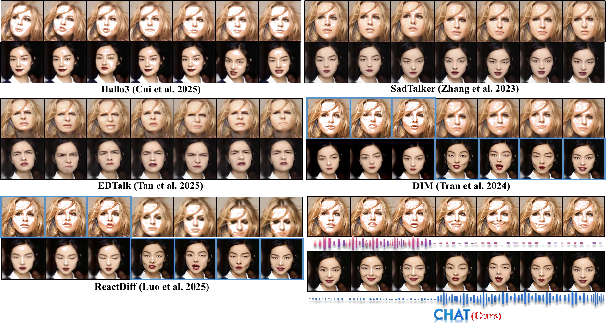
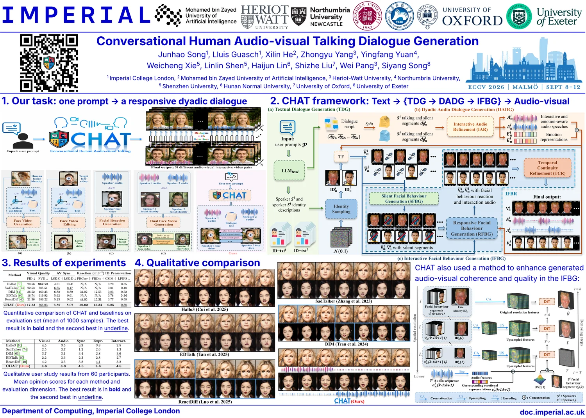

ECCV 2026
A whole conversation.
From one line of text.
Conversational Human Audio-visual Talking Dialogue Generation

Other methods animate one face from a condition, edit a clip you already have, or react to a partner you supply. CHAT writes the conversation, speaks it, and performs both sides.
Two people. Talking, listening, answering each other. No script. No reference video. Nothing but a prompt.
Generated dialogues
Watch them take turns.
Six prompts, six conversations, twelve identities that were never paired by hand. Both faces in a clip are generated as a responsive pair, so the one listening reacts to the one speaking, inside the same clip.
Five turns in ten seconds. Each speaker talks twice and drops a back-channel into the other's turn, all on one shared timeline.
Both sides interrupt politely: an "uh-huh" at two seconds, a "yeah" at eight, each landing inside the other speaker's sentence.
One speaker holds the floor for eight seconds. The listener is generated for that whole stretch, not frozen, and answers at the end.
Two generations talking. The voices are sampled independently of the faces, so a pair like this is a draw from the model, not a casting choice.
A tutor and a student. The student's reply opens with a hesitation, which the audio stage renders rather than smoothing away.
Identities need not be photorealistic. The same method drives illustrated faces with no change. This clip comes from the conference video, so it is lower resolution than the others.
Each clip is the full CHAT output for one prompt, at 512 px per face, then passed through the CodeFormer face upscaler that Hallo2 ships, so it holds up on a large screen. Every number on this page is measured before that step. Both speakers' audio tracks are mixed at their own level, and each clip is normalised to the same loudness.
How it works
Three stages.
One conversation.
-
01
It writes the dialogue
A language model turns one scenario prompt into multi-turn dyadic scripts, each with a described identity for both speakers.
-
02
It speaks both parts
Back-channels, per-turn emotion, timing and a shared acoustic environment are added, then synthesised as two voices on one timeline.
-
03
It performs the faces
Talking segments are rendered, listening segments generated, each face made responsive to its partner, and every seam blended away.

The full pipeline. TDG writes the dialogue pairs and identity descriptors, DADG turns each dialogue into interactive emotion-aware audio, and IFBG synthesises the responsive face-video pair.

Inside the responsive block. Identity and the partner's behaviour are fused at several spatial scales, then fed into the diffusion transformer coarse first and fine last, so early steps settle the shape of a movement and later steps bring in the detail.
Inside
Three mechanisms, drawn.
Each diagram below is the actual rule the paper specifies, animated as you scroll rather than described in prose.
01
One timeline, two speakers
Sentences and back-channels are laid on a single shared timeline. While one speaker holds the turn the other is silent, apart from the short interactive words that keep the exchange alive.
Winter = { uh-huh, hmm, okay, yeah }
02
Coarse first, fine last
The partner's behaviour is fused with the identity at several spatial scales. Early denoising steps receive only the coarsest scale, which fixes the shape of a movement. Finer scales join as the steps go on, bringing in detail.
l(t) = max(1, ⌈L·t / T⌉) · Φ(t) = ⋃l=l(t)L C(l)
03
No visible seam
Segments are refined separately, so their join could show. A half-Gaussian cross-fade over a narrow window blends the two sides, weighted equally at the boundary itself and decaying outwards.
α(τ) = ½ exp( −(τ−1)² / 2σ² ), σ = W/3
Overview
Why this matters.
Large-scale dyadic interactive audio-visual dialogue datasets are the raw material for interactive virtual agents and digital humans. Collecting them is slow, expensive, and ethically sensitive.
CHAT generates them instead. It unifies large language models and talking-face models with interactive audio and facial-behaviour refinement, producing aligned dyadic clips with diverse content and diverse identities from a single prompt. It outperforms existing methods built for related tasks under both objective and subjective evaluation.
The synthesised CHAT-AVD-50k dataset then works as pre-training data for downstream interactive head generation, improving both PerFRDiff and ReactDiff on REACT 2024.
Benchmarks
Measured against the closest work.
No existing method addresses this task directly, so CHAT is compared with recent methods for the nearest related tasks, all given the same prompts and audio and standardised on the first ten seconds. Means over 1000 generated dialogues.
| Method | FID↓ | FVD↓ | LSE-C↑ | LSE-D↓ | FRCorr↑ | FRDiv↑ | CSIM↑ | LPIPS↓ |
|---|---|---|---|---|---|---|---|---|
| Hallo3 | 20.56 | 362.23 | 4.61 | 10.41 | N/A | N/A | 0.79 | 0.55 |
| SadTalker | 22.53 | 385.51 | 6.85 | 8.17 | N/A | N/A | 0.81 | 0.48 |
| DIM | 36.52 | 460.35 | 6.82 | 8.89 | 31.02 | 12.55 | 0.83 | 0.52 |
| EDTalk | 18.74 | 619.92 | 5.62 | 9.61 | N/A | N/A | 0.78 | 0.36 |
| ReactDiff | 21.36 | 386.22 | 5.23 | 9.02 | 48.05 | 15.31 | 0.77 | 0.58 |
| CHAT | 17.33 | 365.03 | 6.89 | 8.07 | 50.02 | 15.34 | 0.85 | 0.38 |
Best in bold, second underlined. FRCorr and FRDiv are ×10⁻². N/A marks a metric a method cannot produce.
| Method | Visual | Audio | Sync | Expr. | Interact. |
|---|---|---|---|---|---|
| Hallo3 | 4.5 | 3.5 | 3.9 | 3.8 | 2.5 |
| SadTalker | 2.5 | 3.7 | 1.2 | 2.0 | 1.3 |
| DIM | 3.7 | 3.1 | 3.4 | 2.8 | 3.6 |
| EDTalk | 2.2 | 3.6 | 2.3 | 2.8 | 2.7 |
| ReactDiff | 4.2 | 3.5 | 3.8 | 4.1 | 3.2 |
| CHAT | 4.6 | 4.8 | 4.6 | 4.6 | 4.8 |
| Variant | MCD↓ | Emo-Acc↑ | ViSQOL↑ | FID↓ |
|---|---|---|---|---|
| w/o audio refinement | 6.23 | 41.2% | 2.97 | 21.34 |
| w/o emotion | 9.12 | 38.3% | 2.67 | 23.45 |
| w/o facial refinement | — | — | — | 38.67 |
| w/o boundary continuity | — | — | — | 18.56 |
| Full CHAT | 4.23 | 78.4% | 3.98 | 17.33 |
A dash marks an audio metric a visual-only ablation leaves unchanged.

Talking-face methods run twice give two unrelated monologues. Reaction methods need a real speaker video as input. CHAT produces the pair as one exchange.
CHAT-AVD-50k
A dataset that writes itself.
Every clip carries turn-level emotion, scenario and speaker metadata, spanning casual, professional, emotional, academic and social scenarios. As pre-training data it lifts two different reaction models on the REACT 2024 benchmark.
| Pre-training | PerFRDiff FRCorr↑ | FRDist↓ | ReactDiff FRCorr↑ | FRDist↓ |
|---|---|---|---|---|
| REACT 2024 only | 37.21 | 94.72 | 24.19 | 86.70 |
| + CHAT-AVD-50k | 40.11 | 89.45 | 26.12 | 83.87 |
Poster
ECCV 2026.
Thursday 10 September 2026, 7:30–9:30 PDT, ExHall #163. Conference page ›

Open the full poster as a PDF, 1400 by 1000 mm.
Limitations
What it does not do yet.
Cost
Every clip runs a language model, a speech model and several video diffusion passes. Here scalable means demographic coverage, not a cheap clip.
Metrics
The reaction metrics score facial behaviour, not turn-taking timing or dialogue-level meaning. A metric for interaction quality is still open.
Scope
English only for now, and the downstream study uses REACT 2024, on which the refinement block is pre-trained.
The team
Cite this work.
1Imperial College London 2Mohamed bin Zayed University of Artificial Intelligence 3Heriot-Watt University 4Northumbria University 5Shenzhen University 6Hunan Normal University 7University of Oxford 8University of Exeter †Corresponding author
@inproceedings{song2026chat,
title = {Conversational Human Audio-visual Talking Dialogue Generation},
author = {Song, Junhao and Guasch, Lluis and He, Xilin and Yang, Zhongyu and
Yuan, Yingfang and Xie, Weicheng and Shen, Linlin and Lin, Haijun and
Liu, Shizhe and Pang, Wei and Song, Siyang},
booktitle = {European Conference on Computer Vision (ECCV)},
year = {2026}
}The publisher record is pending the ECCV 2026 proceedings.